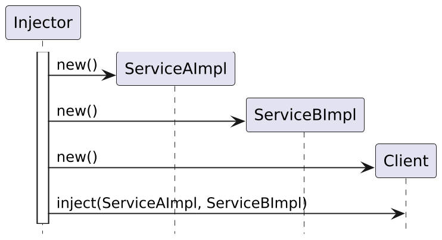
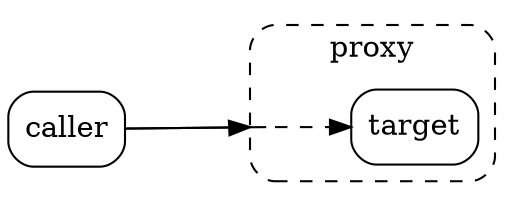

//took all the "wiring" from the classes to the factory method
public static Controller makeController() {
DataSource dataSource =
new DataSource(ConnectionPool.getInstance());
ConferenceDao conferenceDao = new ConferenceDao(dataSource);
SpeakerDao speakerDao = new SpeakerDao(dataSource);
TalkDao talkDao = new TalkDao(dataSource);
return new Controller(conferenceDao, speakerDao, talkDao);
}Core Java. Lecture #13
Dependency Injection. DI containers working principle. Spring Framework (Spring DI, Spring AOP)
@inponomarev
Ivan Ponomarev, Synthesized.io/MIPT
GoF’s Singleton problems
How do I automatically test components that are hard-coded to their dependencies through static fields/methods?
No way you can do it!
GoF’s Singleton problems
Increases coupling
Violates the Single Responsibility Principle
Unable to test normally
Our case study about talks and speakers

Factory
Factory
We got rid of "wiring" and can create components separately, which allows us to test.
However, in the factory method there are many repetitive actions, the factory must "know" about all the components.
In general, this process can be automated!
Dependency Injection

Dependency Injection

DI Frameworks
Google Guice
JBoss Seam Framework
PicoContainer
Spring
Let’s build our own homemade DI-framework
Example based on Evgeny Borisov’s training "Spring Ripper"
Allows you to understand the logic and internals of the Spring Framework
Robot lecturer

public class RobotLecturer {
//let what we need just magically appear here!
@InjectByType
private Lecture lecture;
@InjectByType
private Speaker speaker;
@InjectByType
private SlideShow slideShow;
...
}Lecturer mode
//It's easy to read lectures
public void lecture() {
lecture.getSlides().forEach(
slide -> {
slideShow.show(slide.getText());
speaker.speak(slide.getComment());
}
);
}
//Main method
public static void main(String[] args)
throws ReflectiveOperationException {
RobotLecturer lecturer =
new ObjectFactory().createObject(RobotLecturer.class);
lecturer.lecture();
}Object Configurator
@RequiredArgsConstructor
public class InjectByTypeAnnotationObjectConfigurator
implements ObjectConfigurator {
//let's pass the ObjectFactory here as a constructor parameter
private final ObjectFactory factory;
@Override
public void configure(Object t) throws ... {
for (Field field : t.getClass().getDeclaredFields()) {
if (field.isAnnotationPresent(InjectByType.class)) {
field.setAccessible(true);
//Do we know how to create an object by its type?
field.set(t, factory.createObject(field.getType()));
}
}
}
}How an object is being created and configured
public class ObjectFactory {
//Don't we need DI here also?
private final Reflections scanner =
new Reflections("edu.phystech");
private final List<ObjectConfigurator> configurators =
new ArrayList<>();
public <T> T createObject(Class<? extends T> type) throws ... {
//Let's find an implementation of the requested type
type = resolveImpl(type);
//Let's create an instance (using the default constructor, TODO)
T t = type.newInstance();
//Configuring
configure(t);
....
}The configure method is very simple
private <T> void configure(T t) throws ... {
for (ObjectConfigurator configurator : configurators) {
configurator.configure(t);
}
}How is the appropriate implementation found?
private <T> Class<? extends T> resolveImpl(Class<? extends T> type){
if (type.isInterface()) {
Set<Class<? extends T>> classes =
scanner.getSubTypesOf((Class<T>) type);
if (classes.size() != 1) {
throw new RuntimeException(
"0 or more than one implementation found for type "
+ type + " please update your config");
}
type = classes.iterator().next();
}
return type;
}Robot lecturer
public class RobotLecturer {
//let what we need just magically appear here!
@InjectByType
private Lecture lecture;
@InjectByType
private Speaker speaker;
@InjectByType
private SlideShow slideShow;
...
}Lecturer mode
//It's easy to read lectures
public void lecture() {
lecture.getSlides().forEach(
slide -> {
slideShow.show(slide.getText());
speaker.speak(slide.getComment());
}
);
}
//Main method
public static void main(String[] args)
throws ReflectiveOperationException {
RobotLecturer lecturer =
new ObjectFactory().createObject(RobotLecturer.class);
lecturer.lecture();
}Object Configurator
@RequiredArgsConstructor
public class InjectByTypeAnnotationObjectConfigurator
implements ObjectConfigurator {
//let's pass the ObjectFactory here as a constructor parameter
private final ObjectFactory factory;
@Override
public void configure(Object t) throws ... {
for (Field field : t.getClass().getDeclaredFields()) {
if (field.isAnnotationPresent(InjectByType.class)) {
field.setAccessible(true);
//Do we know how to create an object by its type?
field.set(t, factory.createObject(field.getType()));
}
}
}
}How an object is being created and configured
public class ObjectFactory {
//Don't we need DI here also?
private final Reflections scanner =
new Reflections("edu.phystech");
private final List<ObjectConfigurator> configurators =
new ArrayList<>();
public <T> T createObject(Class<? extends T> type) throws ... {
//Let's find an implementation of the requested type
type = resolveImpl(type);
//Let's create an instance (using the default constructor, TODO)
T t = type.newInstance();
//Configuring
configure(t);
....
}The configure method is very simple
private <T> void configure(T t) throws ... {
for (ObjectConfigurator configurator : configurators) {
configurator.configure(t);
}
}How is the appropriate implementation found?
private <T> Class<? extends T> resolveImpl(Class<? extends T> type){
if (type.isInterface()) {
Set<Class<? extends T>> classes =
scanner.getSubTypesOf((Class<T>) type);
if (classes.size() != 1) {
throw new RuntimeException(
"0 or more than one implementation found for type "
+ type + " please update your config");
}
type = classes.iterator().next();
}
return type;
}Let’s look for configurators automatically!
//ObjectFactory constructor
public ObjectFactory() throws ReflectiveOperationException {
Set<Class<? extends ObjectConfigurator>> classes =
scanner.getSubTypesOf(ObjectConfigurator.class);
for (Class<? extends ObjectConfigurator> aClass : classes) {
try {
Constructor<? extends ObjectConfigurator> constructor =
aClass.getConstructor(ObjectFactory.class);
//we inject ourselves through constructor, if needed
configurators.add(constructor.newInstance(this));
} catch (NoSuchMethodException e){
configurators.add(aClass.newInstance());
}
}
....//to be continuedMore configurators!
@Retention(RUNTIME)
public @interface InjectRandomInt {
int min();
int max();
}InjectRandomIntObjectConfigurator
public class InjectRandomIntObjectConfigurator
implements ObjectConfigurator {
@Override
public void configure(Object t) throws IllegalAccessException {
Class<?> type = t.getClass();
for (Field field : ReflectionUtils.getAllFields(type)) {
InjectRandomInt annotation =
field.getAnnotation(InjectRandomInt.class);
if (annotation != null) {
int min = annotation.min();
int max = annotation.max();
int value = ThreadLocalRandom.current().nextInt(min, max+1);
field.setAccessible(true);
field.set(t, value);
}
}
}
}So, the first steps:

Object Initialization
Why is the constructor not suitable for actions that require the injected values?
Injection may occur after constructor. Therefore, you need a special action that is called after constructor and injection!
PostConstruct
public class RobotLecturer {
@InjectByType
private Lecture lecture;
@InjectRandomInt(min = 1, max = 3)
private int repeat;
@PostConstruct
public void init() {
//A place where all injected values can be used
for (int i = 0; i < repeat; i++)
speaker.speak("Hello everyone");
}
...
}Let’s continue to implement createObject
public <T> T createObject(Class<? extends T> type) throws ... {
....
//Configuring
configure(t);
//running PostConstruct methods
invokeInitMethods(type, t);
....
}
private <T> void invokeInitMethods(Class<? extends T> type, T t)
throws ... {
for (Method method : type.getMethods()) {
if (method.isAnnotationPresent(PostConstruct.class)) {
method.invoke(t);
}
}
}Sequence of actions

Sometimes we need to modify the action of the method
@Retention(RUNTIME)
public @interface Benchmark {
}[[[BENCHMARK method speak
Speaking: blah-blah-blah
Time: 107100ns]]]Proxy object

BenchmarkProxyConfigurator
public class BenchmarkProxyConfigurator
implements ProxyConfigurator {
@Override
public <T> T wrapWithPoxy(T t, Class<? extends T> type) {
boolean isProxyNeeded = type.isAnnotationPresent(Benchmark.class)
|| !ReflectionUtils.getAllMethods(type, method ->
method.isAnnotationPresent(Benchmark.class)).isEmpty();
if (isProxyNeeded) {
return (T) Proxy.newProxyInstance(type.getClassLoader(),
type.getInterfaces(),
(proxy, method, args) -> {
Method classMethod = type.getMethod(method.getName(),
method.getParameterTypes());
return invoke(t, type, method, args, classMethod);
});
}
return t;
}}Proxied method invocation
private Object invoke(Object t, Class type, Method method,
Object[] args, Method classMethod) throws ... {
if (classMethod.isAnnotationPresent(Benchmark.class)
|| type.isAnnotationPresent(Benchmark.class)) {
System.out.printf("[[[BENCHMARK method %s%n", method.getName());
long start = System.nanoTime();
Object retVal = method.invoke(t, args);
long end = System.nanoTime();
System.out.printf("Time: %dns]]]%n", end - start);
return retVal;
} else {
return method.invoke(t, args);
}
}Sequence of actions (final picture)

Intermediate conclusions
DI-container implements the following stages of "setting up" objects:
instantiation
configuration (injections)
initialization (postconstruct)
proxying
DI pattern repeats itself: many DI container parts are convenient to configure via DI!

"Perhaps one of the hardest parts of explaining Spring is classifying exactly what it is" — Pro Spring 5, 5th ed., p. 1
Spring Framework
DI
AOP
Testing
Integration with a huge number of technologies
Very mature (and continuing to actively develop)
Rewrite our example from a "homemade" framework to Spring
Before:
public class Main {
public static void main(String[] args) throws ... {
RobotLecturer lecturer = new ObjectFactory()
.createObject(RobotLecturer.class);
lecturer.lecture();
}
}Rewrite our example from a "homemade" framework to Spring
After:
@ComponentScan("edu.phystech.robotlecturer")
public class Main {
public static void main(String[] args) {
ApplicationContext ctx =
new AnnotationConfigApplicationContext(Main.class);
RobotLecturer lecturer = ctx.getBean(RobotLecturer.class);
lecturer.lecture();
}
}Spring Beans
In our example —
RobotLecturer,FirstLecture,SpeakerImpl,SlideShowImpl.
Spring beans are reusable software components.
Any class, both ours and those from a third-party library, is suitable.
Spring configuration methods
Varieties of Spring configurations:
Annotation-based
XML-based
Groovy-based
We will consider only annotation-based, as the most currently used and practical.
A huge number of tutorials (and projects) still have XML configuration.
How to define beans
Classpath Scanning: looks for annotated classes in the given packages.
@Component
@Service
@Controller
@Repository
Factory methods
@Configuration → @Bean
Classpath scanning
@ComponentScan("edu.phystech.robotlecturer")Annotation attributes:
String[] basePackages— base packages for scanning for annotated components.Class<?>[] basePackageClasses— as a type-safe alternative, you can specify classes. Packages for each of these classes will be scanned.Pros: convenient.
Cons: classes must be annotated with
@Component,@Serviceetc., which is not always possible for third-party code.
@Configuration class
The configuration class must either be explicitly specified through the 'AnnotationConfigApplicationContext' constructor or accessible through package scanning (in which case the class should be annotated as '@Configuration').
In order to define beans, you need to use
@Beanannotation.
@Configuration class example
@Configuration
public class AppConfig{
@Bean
@Scope(BeanDefinition.SCOPE_PROTOTYPE)
public Color randomColor(){
ThreadLocalRandom random = ThreadLocalRandom.current();
return new Color(random.nextInt(256),
random.nextInt(256), random.nextInt(256));
}
...
}Bean scope
SCOPE_SINGLETONis the default. Created only once at the first request and the single instance is injected everywhere.SCOPE_PROTOTYPE— a new instance is created with each request.There are many others, and you can create your own.
@Lazy
By default, all singletons are created when the container is started (to fail fast, and to avoid delays when the application is running).
For a specific bean, this behavior can be changed using the
@Lazyannotation (see documentation).Lazy initialization is not as good an idea as it seems at first glance.
Bean name
Each bean gets a name (id).
By default, the name is calculated from the class name (
SpeakerImpl→''speakerImpl'‘) or the name of the factory method (`getSpeaker→ ’'speaker'’).The name of the bean can be specified explicitly in the annotation parameter for
@Componentand other annotations (for example:@Service("bestSpeaker")).
Types of injection
Constructor
Setter
Field
Lookup method
Constructor injection
@Component
@RequiredArgsConstructor
public class RobotLecturer {
//will be automatically passed to constructor
private final Lecture lecture;
private final Speaker speaker;
private final SlideShow slideShow;Can be invisible at the first glance (especially with Lombok).
Good for creating immutable objects.
A lot of parameters in constructor? — Do you really need that many?
Setter injection
@Autowired
void setLecture(Lecture lecture) {
//the setter will be automatically invoked after instantiation
this.lecture = lecture;
}Good in a situation where the component itself is able to provide a "default" dependency.
Field injection
@Component
public class RobotLecturer {
//will be set via reflection after instantiation
@Autowired
private Lecture lecture;
@Autowired
private Speaker speaker;
@Autowired
private SlideShow slideShow;Does not multiply setters and constructors in the class, but in general it strongly binds the code and is considered to be not a very good practice.
Although, in test classes this is exactly what is needed.
Lookup method injection
The problem of beans with different life cycles: SCOPE_PROTOTYPE won’t work.
@Component
@Scope(ConfigurableBeanFactory.SCOPE_PROTOTYPE)
public class Bar {...}
@Component
public class Foo {
@Autowired
private Bar bar;
public void bar(){
//the injected bar instance is always the same
}
}Lookup method injection
@Component
public abstract class Foo {
@Lookup
abstract Bar getBar();
public void bar(){
Bar b = getBar();
//now in b there will be a new object each time (well, or the same
//if you remove the SCOPE_PROTOTYPE, although where is the point?)
}
}
Foo foo = ctx.getBean(Foo.class);
foo.bar(); foo.bar(); ...What? do we instantiate an abstract class?! - No, we’re instantiating the wrapper, actually.
Lookup method may be not abstract
@Component
public class Foo {
//the main thing is that it should not be private
@Lookup
Bar getBar(){
return null;
};
public void bar(){
//not null!
Bar b = getBar();
...
}
}Another approach: ObjectFactory injection
@Component
public class Foo {
@Autowired
private ObjectFactory<Bar> barFactory;
public void bar(){
Bar bar = barFactory.getObject();
...
}
}